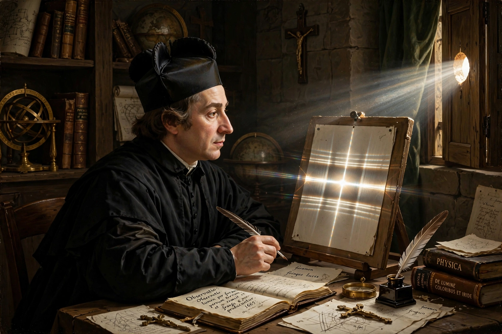

| Born | April 2, 1618 Bologna, Papal States |
|---|---|
| Died | December 28, 1663 (aged 45) Bologna, Papal States |
| Known for | Discovery and naming of the diffraction of light |
| Fields | Physics, astronomy, mathematics |
| Order | Society of Jesus |
Francesco Maria Grimaldi (April 2, 1618 – December 28, 1663) was an Italian Jesuit priest, mathematician, and physicist who taught at the Jesuit college in Bologna. He is credited with the first accurate observations and description of the diffraction of light — a phenomenon he named, from the Latin diffringere, "to break into pieces."
In his posthumously published treatise Physico-mathesis de lumine, coloribus, et iride (1665), Grimaldi reported experiments in which sunlight passing through small apertures produced shadows fringed with coloured bands, and light bands appearing within the geometric shadow — showing that light bends and spreads when passing an obstacle's edge, a "fourth mode" of light propagation beyond straight lines, reflection, and refraction. His observations were later interpreted as evidence for the wave nature of light and developed by Huygens, Fresnel, and others — the same wave behaviour that underlies X-ray diffraction (Laue equations) centuries later.
With his fellow Jesuit Giovanni Battista Riccioli, Grimaldi produced a detailed selenographic map published in Riccioli's Almagestum Novum (1651); the lunar nomenclature they introduced — names such as Mare Tranquillitatis — is still in use today. The lunar crater Grimaldi is named in his honour.
Categories: 1618 births | 1663 deaths | Italian Jesuits | Italian physicists